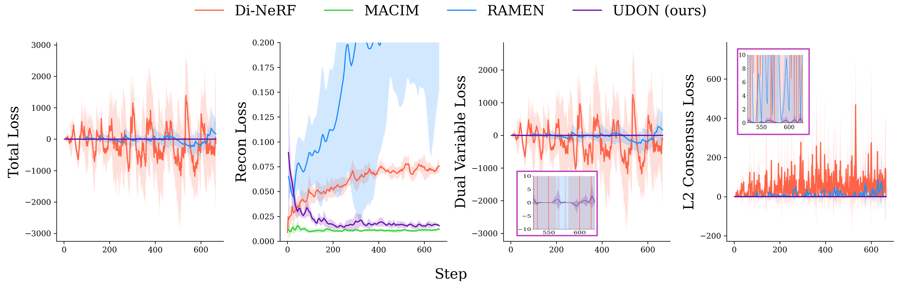
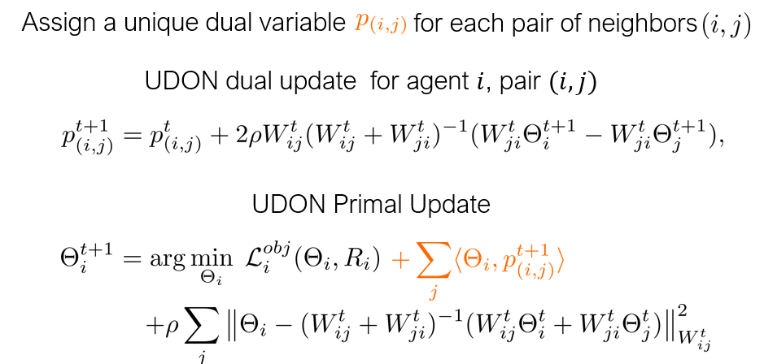
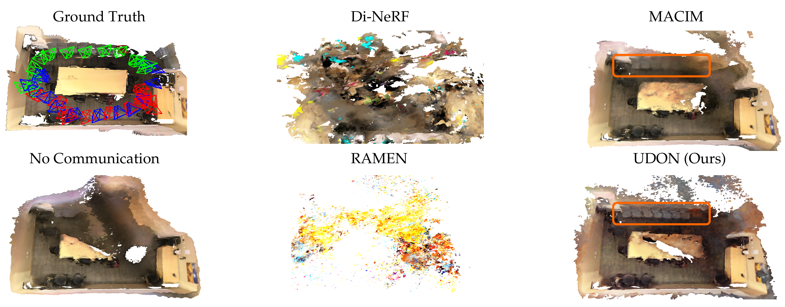
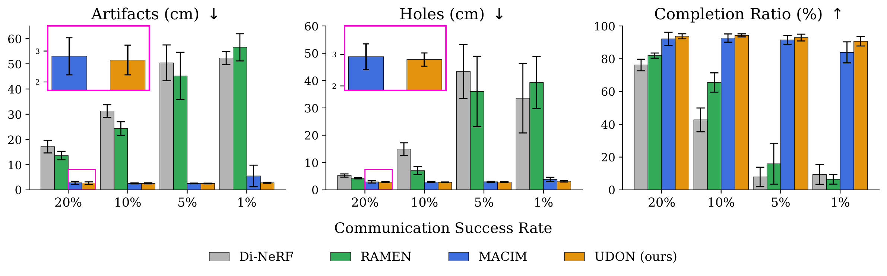

Multi-robot mapping with neural implicit representations enables the compact reconstruction of complex environments. However, it demands robustness against communication challenges like packet loss and limited bandwidth. While prior works have introduced various mechanisms to mitigate communication disruptions, performance degradation still occurs under extremely low communication success rates. This paper presents UDON, a real-time multi-agent neural implicit mapping framework that introduces a novel uncertainty-weighted distributed optimization to achieve high-quality mapping under severe communication deterioration. The uncertainty weighting prioritizes more reliable portions of the map, while the distributed optimization isolates and penalizes mapping disagreement between individual pairs of communicating agents. We conduct extensive experiments on standard benchmark datasets and real-world robot hardware. We demonstrate that UDON significantly outperforms existing baselines, maintaining high-fidelity reconstructions and consistent scene representations even under extreme communication degradation (as low as 1% success rate).
Existing multi-agent mapping methods (Di-NeRF, RAMEN) fail to converge at the very low communication rate. After examining the loss curves, we discover that the divergence is mainly caused by the dual variable component, which oscillates with increasing magnitude.

In UDON, we assign a unique dual variable to each communication link. This approach exclusively use information from currently-connected neighbors, which prevents the optimization from being corrupted by outdated data from long-disconnected agents, thus preventing divergence.

Visual comparison of the reconstructed maps. Under extreme communication constraints, baseline methods such as Di-NeRF and RAMEN fail to converge or produce highly noisy representations. In contrast, UDON maintains a consistent, high-fidelity scene representation, accurately recovering structural details (highlighted in orange) comparable to the ground truth.

Robustness evaluation across varying communication success rates. As communication severely degrades (down to a 1% success rate), UDON dramatically outperforms prior methods, sustaining low artifacts and holes while maintaining a near-optimal completion ratio.

@article{zhao2025udon,
title={UDON: Uncertainty-weighted Distributed Optimization for Multi-Robot Neural Implicit Mapping under Extreme Communication Constraints},
author={Zhao, Hongrui and Zhou, Xunlan and Ivanovic, Boris and Mehr, Negar},
journal={arXiv preprint arXiv:2509.12702},
year={2025}
}